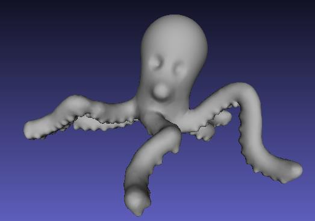

|
Xiaoqiang ZHU 朱晓强 |
|
| Affiliations | ||
| School of Communication and Information Engineering(通信与信息工程学院) | ||
| Shanghai University(上海大学) | ||
| Email: xqzhu@shu.edu.cn |
About
Xiaoqiang Zhu is currently an associate professor in School of Communication and Information Engineering, Shanghai University. From Dec.2022 to Dec.2023, Funded by the China Scholarship Council (CSC) Dr. Zhu is currently visiting Prof. Lihua You's team in NCCA of Bournemouth University,UK.
In Dec. 2013 Dr. Zhu received his Ph.D. supervised by Prof. Xiaogang Jin at the State Key Lab of CAD & CG, Zhejiang University. Before that, he earned his M.S. degree in Computer Science supervised by Prof. Xiaoping Liu at VCC Lab and B.S. degree in Computational Mathematics from Hefei University of Technology in 2009 and 2006 respectively.
Dr. Zhu's research interests include computer graphics, computer vision, GPU general computing, virtual reality, 3D print and artificial intelligence.
Teaching
- Computer Graphics
- Data Structure and Fundementals of Algorithm
- Object-Oriented Programming(VC++)
Selected Publications
 |
Efficient dynamic deformation simulation by integrating PDE-based reconstruction and XPBD | |
| Junheng Fang, Zhidong Xiao, Xiaoqiang Zhu, Lihua You, Jian Jun Zhang | ||
| CASA2023, AniNex Short Papers |
| ED2IF2-Net: Learning disentangled deformed implicit fields and enhanced displacement fields from single images using pyramid vision transformer | ||
| Xiaoqiang Zhu, Xinsheng Yao, Junjie Zhang, Mengyao Zhu, Lihua You, Xiaosong Yang, Jianjun Zhang, He Zhao and Dan Zen | ||
| Appl. Sci. 2023, 13(13), 7577; DOI: 10.3390/app13137577(sci) |
 |
TMSDNet: Transformer with multi-scale dense network for single and multi-view 3D reconstruction | |
| Xiaoqiang Zhu, Xinsheng Yao, Junjie Zhang, Mengyao Zhu, Lihua You, Xiaosong Yang, Jianjun Zhang, He Zhao, Dan Zeng | ||
| Computer Animation & Virtual Worlds, 03 August 2023 https://doi.org/10.1002/cav.2201(sci) |
 |
Robust quasi-uniform surface meshing of neuronal morphology using line skeleton-based progressive convolution approximation | |
| Xiaoqiang Zhu, Xiaomei Liu, Sihu Liu, Yalan Shen, Lihua You, Yimin Wang | ||
| Front. Neuroinform., 27 October 2022 https://doi.org/10.3389/fninf.2022.953930.(sci) |
| Controllable Blending of Line and Polygon Skeleton-based Convolution Surfaces with Finite Support Kernels | ||
| Xiaoqiang Zhu, Qi Chen, Sihu Liu, Chenjie Fan, Chenze Song, Junjie Zhang, Dan Zeng, Xiaogang Jin | ||
| Computers & Graphics (Special Issue of SMI'2022), Elsevier, 2022, 105 (Accepted).(sci) |
 |
Barycentric Convolution Surfaces Based on General Planar Polygon Skeletons | |
| Xiaoqiang Zhu, Chenze Song, Mengyao Zhu, Xiangyang Wang, Lihua You, Xiaogang Jin | ||
| Graphical Models (https://doi.org/10.1016/j.gmod.2020.101069)(sci) |
| Long-term speech information based threshold for voice activity detection in massive microphone network | ||
| Mengyao Zhu, Xiukun Wu, Zhihua Lu, Tao Wang, Xiaoqiang Zhu* | ||
| Digital Signal Processing, Available online 31 May 2019,https://doi.org/10.1016/j.dsp.2019.05.012(sci) |
 |
Screwing Assembly Oriented Interactive Model Segmentation in HMD VR Environment | |
| Xiaoqiang Zhu, Lei Song, Nan Wang, Ruiheng Zhang, Shenshuai Chen, Xiangyang Wang, Mengyao Zhu, Lihua You, Zhigang Deng, Xiaogang Jin | ||
| CASA2019, Computer Animation and Virtual Worlds. 2019;e1880. https://doi.org/10.1002/cav.1880(sci) [Video] |
| Human Pose Estimation With Deeply Learned Multi-Scale Compositional Models | ||
| Rui Wang, Zhongzheng Cao, Xiangyang Wang, Zhi Liu, Xiaoqiang Zhu | ||
| IEEE Access 7: 71158-71166 (2019) (SCI) |
| Improving Human Pose Estimation With Self-Attention Generative Adversarial Networks | ||
| Xiangyang Wang, Zhongzheng Cao, Rui Wang, Zhi Liu, Xiaoqiang Zhu | ||
| IEEE Access 7: 119668-119680 (2019) (SCI) |
 |
Alpha-Shape based 3D Printable Manifold Modeling | |
| Xiaoqiang Zhu, Chenjie Fan, Lei Song, Chenze Song, Mengyao Zhu, Xiangyang Wang | ||
| ICGIP2018 (10th International Conference on Graphics and Image Processing),p96-p98,Chengdu,December 12.12-14(ei：20192106949200) |
 |
艺术Mosaic并行拼贴 | |
| 宋磊,朱晓强,叶翰辰,史璇,朱梦尧,王向阳 | ||
| 安徽工业大学学报（自然科学版）(录用，核心)（第十九届全国图象图形学学术会议(NCIG2018）推荐) |
 |
Gaussian filter for TDOA based sound source localization in multimedia surveillance | |
| Mengyao Zhu, Huan Yao, Xiukun Wu, Zhihua Lu, Xiaoqiang Zhu, Qinghua Huang | ||
| Multimedia Tools Appl. 77(3): 3369-3385 (2018)（sci） |
| 头戴设备VR环境下光滑加权等距面交互建模 | ||
| 朱晓强, 潘虹艺, 徐浩, 宋磊, 朱梦尧, 王向阳 | ||
| 系统仿真学报,30(7):2459-2464(2018)(核心),第十七届中国虚拟现实大会(ChinaVR 2017)推荐 [视频] |
|  | 头戴设备VR环境下基于网格变形的交互雕刻建模 | |
| 朱晓强, 余涛 | ||
| 浙江大学学报（工学版）,52(3):599-604(2018)（ei）,第六届中国图学大会（China Graphics’2017）推荐 [视频] |
 |
基于时延估计的麦克风阵列一致性分析 | |
| 姚欢, 朱梦尧, 朱晓强 | ||
| 复旦学报(自然科学版), 56(2): 175-181 (2017) (EI) |
| Brush2Model: Convolution Surface-based Brushes for 3D Modeling in HMD-based Virtual Environments | ||
| Xiaoqiang Zhu, Lei Song, Lihua You, Mengyao Zhu, Xiangyang Wang, Xiaogang Jin | ||
| CASA2017, Comp Anim Virtual Worlds. 2017;e1764. https://doi.org/10.1002/cav.1764 (sci) [Video] |
| Human Pose Estimation via Deep Part Detection | ||
| Xiangyang Wang, Jiacheng Hu, Yusu Jin, Zhi Liu, Xiaoqiang Zhu, Qiuyu Zhu,Haiwu Zhao | ||
| International Forum on Digital TV and Wireless Multimedia Communications IFTC 2017: Digital TV and Wireless Multimedia Communication pp 55-66(ei) |
 |
Tree Crown LOD Modeling Based on α-Shape | |
| Xiaoqiang Zhu, Hao Zhou, Lei Song | ||
| Journal of Graphics, 38(3):303-313(2017)(In Chinese, 核心) |
 |
Multi-scale Deep Residual Networks for Fine-Grained Image Classification | |
| Xiangyang Wang, Yusu Jin, Zhi Liu, Yadong Zhao,Xiaoqiang Zhu, Juan Zhang | ||
| In: Yang X., Zhai G. (eds) Digital TV and Wireless Multimedia Communication. IFTC 2016. Communications in Computer and Information Science, vol 685, pp205-217, Springer, Singapore(ei) |
| Analytical solutions for tree-like structure modelling using subdivision surfaces | ||
| Xiaoqiang Zhu, Xiaogang Jin, Lihua You | ||
| Computer Animation and Virtual Worlds 26(1): 29-42 (2015) (sci) [PDF][Video] |
| High-quality tree structures modelling using local convolution surface approximation | ||
| Xiaoqiang Zhu, Xiaogang Jin, Lihua You |
||
| The Visual Computer 31(1): 69-82 (2015) (sci) [PDF][Video] |
 |
A Method for Physics-based Dynamic Deformation with St. Venant Kirchhoff Elasticity and Implicit Newmark Integrator | |
| Xiang Feng, Wanggen Wan, Xiaoqiang Zhu, Yanlu Yin, Jing Wang |
||
| Journal of Information & Computational Science, 2015, 12(9), pp.3333-3343（ei） |
 |
A Two-Phase Approximation of Cylindrical Branching Models | |
| Xiaoqiang Zhu, Junli Chen, Juan Zhang |
||
| IEEE ICALIP 2014: The 4th Conference on Audio, Language and Image Processing: 826-829 (2014) (ei) |
 |
过程式城市建模研究进展 | |
| 朱晓强, 万旺根 |
||
| 应用科学学报, 32(5): 469-472 (2014)(核心) |
| Efficient polygonization of tree trunks modeled by convolution surfaces | ||
| Xiaoqiang Zhu, Xuekun Guo, Xiaogang Jin | ||
| SCIENCE CHINA Information Sciences 56(3): 1-12 (2013) (sci) [PDF][Video] |
| Efficient tree-like structures modeling based on subdivision surfaces | ||
| Xiaoqiang Zhu, Xiaogang Jin, Lihua You |
||
| ACM VRCAI 2013: The 12th ACM International Conference on Virtual Reality Continuum and its Applications in Industry: 199-206 (2013) (ei) |
 |
Parallel Simulation of Large-Scale Universal Particle Systems Using CUDA | |
| Xiangfei Li, Xuzhi Wang, Wanggen Wan, Xiaoqiang Zhu, Xiaoqing Yu |
||
| IEEE DASC 2013: The 11th IEEE International Conference on Dependable, Autonomic and Secure Computing: 572-577 (2013) (ei) |
| Analytical solutions for sketch-based convolution surface modeling on the GPU | ||
| Xiaoqiang Zhu, Xiaogang Jin, Shengjun Liu, Hanli Zhao |
||
| The Visual Computer 28(11): 1115-1125 (2012) (sci) [PDF][Video1][Video2] |
 |
基于动态规划的城市道路提取改进算法 | |
| 刘晓平, 朱晓强, 余烨, 袁晓辉， Bill P. Buckles |
||
| 工程图学学报, 31(4): 183-188 (2010)（核心） |
| 基于LiDAR点云的城市地面提取 | ||
| 朱晓强, 李琳, 余烨, 刘晓平 |
||
| CACIS·2009: 全国第20届计算机技术与应用: 655-658 (2009) |
 |
基于LiDAR点云数据的三角网构建算法研究 | |
| 刘晓平, 朱晓强, 余烨, 袁晓辉， Bill P. Buckles |
||
| 软件学报(增刊), Vol(19): 1-9 (2008) (ei) |
| 基于三点的航拍图像倾斜校正方法及其应用 | ||
| 罗月童, 朱晓强, 刘晓平 |
||
| 仪器仪表学报(增刊), 28(8): 590-593 (2007) |
资助项目
- 国家自然科学基金青年基金
- 上海市教委科研创新项目
- 浙江大学CAD&CG国家重点实验室开放课题
- 上海高校青年教师培养资助计划
委托项目
- 基于VR的心理测试系统
- 基于Hololens的BIM模型增强现实交互展示系统
- 基于webgl的BIM模型可视化系统
- 基于Hololens的BIM模型可视化系统
- 基于kinect的模型动画驱动软件
专利
- 朱晓强，徐佳宁，周益羽，洪路宁，曾丹. 一种基于块定位的数字水印定位与识别方法和系统. 2023.5.11受理，受理号：2023105272868
- 朱晓强,周益羽,洪路宁,曾丹. 基于三角切分的平行四边形点云码设计与识别. 2022.2.10 受理，受理号：202210121989.6
- 朱晓强,洪路宁,周益羽, 曾丹.一种Dot 点集码的设计与识别系统. 2021.12.16 受理，受理号：20211153443.3
- 朱晓强,陈琦. 一种基于FARO扫描仪和点云的地形扫描分析系统. 专利号：ZL202110529295.1 2023.1授权.
- 朱晓强, 周浩, 张睿恒, 陈沈帅. 一种基于分割模型和紧固件组装的3D模型打印方法. 专利号: ZL201710076811.3, 申请日: 2017年2月13日(2019授权)
- 朱晓强, 宋磊. 一种VR环境中基于卷积曲面逼近的建模方法. 申请号: ZL201710076582.5，申请日: 2017年2月13日（2019授权）
- 朱晓强,李正华,薛铭健,蓝岚,肖宁,史璇,宋磊. 一种虚拟现实环境下可变形手抓取交互技术.申请号:201810464798.3,申请日:2018.5.16（2021授权）
- 朱晓强,范晨杰. 一种基于有限支撑的半径控制的卷积曲面混合建模方法.申请号:201910257575.4,申请日:2019.4.1（2021授权）
本科生指导
- 基于混合现实的三维神经元建模及可视化云服务系统-2023大学生创新项目校级（徐一依等）
- 基于unity3d的沉浸式展台系统-2022大学生创新项目校级（胡文健等）
- 基于Unity3D平台的分支结构三维建模—2021大学生创新项目校级（黄冰婷等）
- 基于Unity3D引擎在VR环境中实现虚拟陶瓷制作—2020大学生创新项目市级（冯晓祥等）
- 基于深度信息的手部追踪系统的设计与实现--2020优秀本科毕业设计（蔚嘉欣）
- 基于unity平台的全景视觉系统--2019大学生创新项目市级（王诗语等）
- Go!Brush--“华为杯”第二届中国大学生VRAR开发大赛最具潜力奖(2018)（何庆琳等）
- 朱晓强, 潘虹艺, 徐浩, 宋磊, 朱梦尧, 王向阳. 头戴设备VR环境下光滑加权等距面交互建模,《系统仿真学报》（核心）,30(7):2459-2464(2018).(第十七届中国虚拟现实大会(ChinaVR 2017)推荐)
- 朱晓强, 余涛. 头戴设备VR环境下基于网格变形的交互雕刻建模,浙江大学学报（工学版）,52(3):599-604(2018)（ei）,第六届中国图学大会（China Graphics’2017）推荐
- 基于Unity3D引擎的头戴设备VR环境下交互建模--2018大学生创新项目校级（何庆琳、黄臻臻、赵翔宇、叶冰聪、王逸璋、沈立竑）
- 基于FPGA数字信号的曼彻斯特编解码及接口设计--2018优秀本科毕业设计（尹乔）
- Unity3D中的虚拟手交互动画--2018优秀本科毕业设计（李正华）
- 头戴设备环境下隐式曲面交互建模与等值面提取--2018优秀本科毕业设计（蓝岚）
- 面向3D打印的虚拟现实建模系统--第二届（2017）“汇创青春”上海大学生文化创意作品二等奖（余涛、李琦、李正华、潘虹艺、何庆琳、叶冰聪）
- 虚拟现实环境下沉浸式三维交互课堂--2017优秀本科毕业设计（双雪菡）
- 虚拟现实环境下可变形手抓取交互系统--2017大学生创新项目市级（薛铭健、李正华、蓝岚、肖宁、史璇）
- 图像mosaic艺术处理--2016优秀本科毕业设计（叶翰辰）
- 基于手势直接操作的虚拟现实教室环境演示系统--2016上海市Ti杯大学生电子设计竞赛一等奖(王学嘉、吴连耀、余涛)
- 翔英楼漫游系统--2016上海市Ti杯大学生电子设计竞赛三等奖(沈立竑、蓝岚、肖宁)
- 基于头盔显示虚拟环境的交互式建模系统--2016上海大学数字媒体课外作品大赛二等奖（卢迪、朴昱霖、沈立竑）
小组视频
资源链接